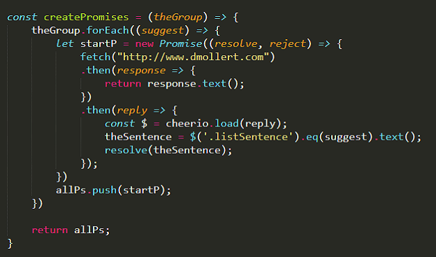

Here's a combination . . .
Promise.all, Fetch and Cheerio
- that web scraping npm module -
all running on a Node.js server.
I was searching the internet for help with a project which used these two methods along with the npm module. The issues I was having had to do with dealing with multiple Promises. The closest I came to my situation was a youtube video made by Alex Jacobs where he showed a concept which I adapted to fit my project. The main idea I show below is to pack each promise/fetch into an array before they are resolved. At some time later you can run the Promise.all method and resolve them. This concept solved my issues I was having with node routing as you will see.
I will be using my website to scrap some of the suggetions listed there.
Let's start with a basic node server. I added the three modules, express, node-fetch and Cheerio for my needs.
Before we get into it, I want to show this switch function and the variables I am using.


With this createPromises function you pass in an array of items, which in my case are the suggestion numbers (0 and 3). For each suggestion (suggest) it creates a Promise and fetchs the HTML to scrape. The response is then returned in a text format. The reply recieves the response and sends it to Cheerio for scraping. I add the numbered sentence (suggest) and resolve the fetch. Each Promise is pushed into the allPs array, and the array is returned.

Here is what is returned from the createPromises function. An array of two Promises that are pending.

Finally where it begins. I substituted whichSuggetions for the req.body which comes from the GET route. Then the variables whichOne1 and whichOne2 are created with the switch function. At the bottom of the image, the array whichSuggestions is sent to the fuction createPromises shown above. The array of pending promises that is returned is sent to the letsResolve function which handles all the Promises with Promise.all. Then result is returned which consists of each sentence in a "result" array. Last step is some Node Express syntax to send both sentences to the website.

And here is what you end up with.

This works very nicely except you give up the .catch error handling in fetch and promises. When I tried to simulate an error I got an array with '' elements.